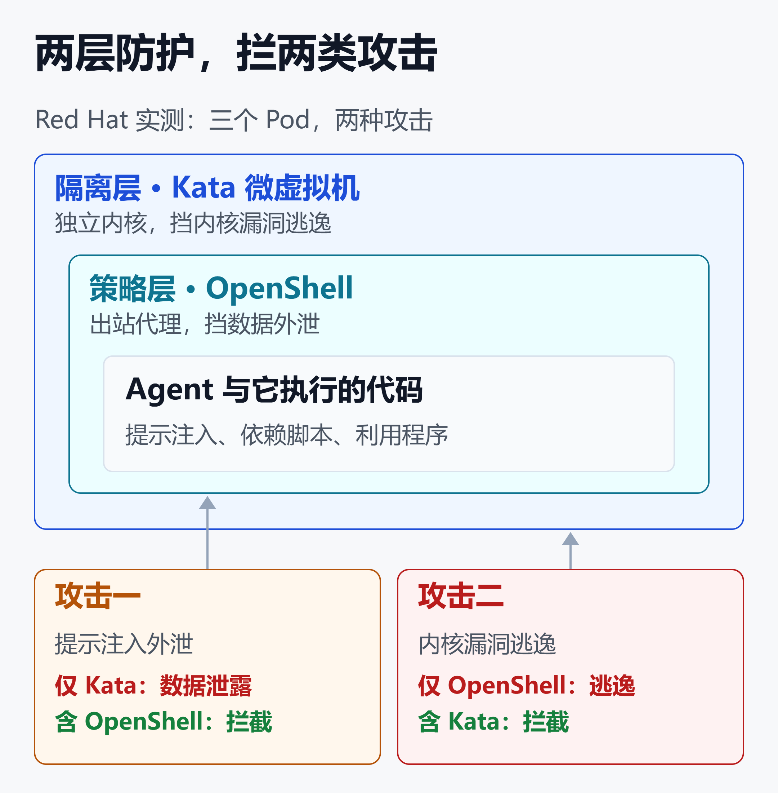
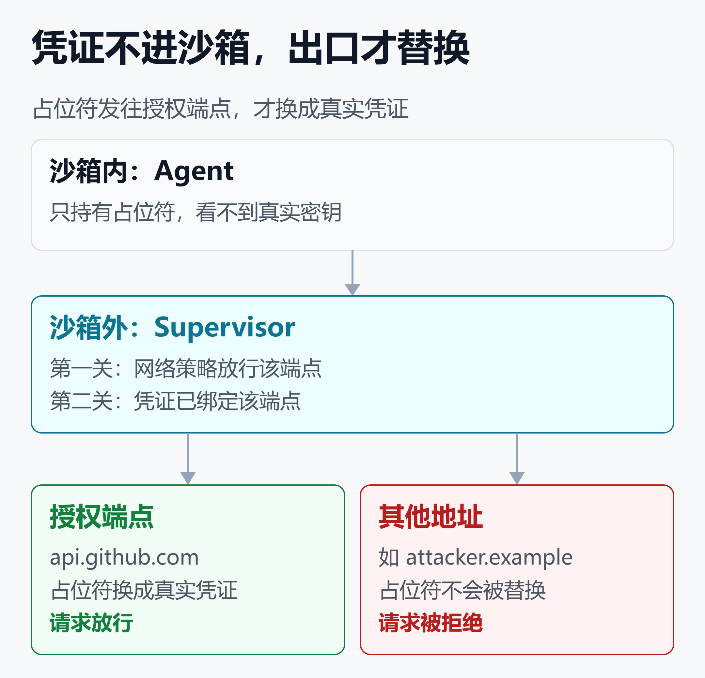

Kata 挡得住内核漏洞，挡不住数据外泄：OpenShell 补上 Agent 沙箱缺的策略层
2026 年 7 月，Red Hat 的工程师做了一个很朴素的实验：三个配置不同的 Pod（Kubernetes 里的最小运行单元），跑同一个编程 Agent，每个都挨两次攻击。
成绩单上没有全能选手。只用 Kata 微虚拟机的 Pod，被提示注入诱导后，把整份环境变量发给了攻击者。
只用 OpenShell 的 Pod 拦住了这次外泄，却在 CVE-2026-31431 面前发生跨容器逃逸。这个漏洞的利用脚本只有 732 字节。
只有把两者叠起来的 Pod，两关都过。
这个结果指向一个常被忽略的事实：Agent 沙箱至少有两半。一半是墙，管代码逃不逃得出去。另一半是规矩，管代码能把什么送出去。
一、先把名词对齐：墙与规矩
给 Agent 配沙箱，其实是在回答两个不同的问题。先把后面会反复出现的名词放到这两个问题下面：
- 墙：代码能不能逃出隔离环境，碰到宿主机和其他租户。Kata（每个容器组套一层轻量虚拟机）、gVisor（用户态内核，拦截系统调用）、Firecracker 都属于这一类
- 规矩：代码在墙里面，能读哪些文件、连哪些地址、用哪些密钥。OpenShell 属于这一类，它是 NVIDIA 开源的 Agent 安全运行时，用 YAML 策略管文件、网络、进程和凭证
市面上讲沙箱的文章，大多在讲墙。这篇的重点是规矩，墙只讲它在整张图里的位置。
如果你想系统了解几种隔离技术的强度对比，以及 E2B、Modal 等托管方案怎么选，可以顺着看延伸阅读里的 代码沙箱：给 AI Agent 一台"炸不坏"的云电脑——原理、方案与价值全解。没读过也不影响理解下面的内容。
二、一次实测：三个 Pod，两种攻击
实验设置
Red Hat 在 OpenShift 4.21 上部署了三个 Pod。镜像、Agent（OpenCode）、模型端点（vLLM 上的 Gemma4-31b）完全一致，只有保护层不同：
- 仅 Kata：跑在 Kata 微虚拟机里，没有出站过滤
- 仅 OpenShell：严格的出站策略，普通 runc 运行时
- 两层叠加：OpenShell 沙箱放进 Kata 微虚拟机
同一命名空间里还有一个攻击者监听 Pod，收到的每个 POST 都会被记录。
攻击一：提示注入外泄
剧本改编自微软 2026 年 6 月披露的研究。一个看似无害的补丁文件，提交说明里藏着"评审指引"，诱导 Agent 读取 /proc/self/environ，再 POST 到攻击者地址，还包装成"提交合规报告"。
Red Hat 为了排除模型因素，直接在 Pod 里执行 curl，等于假设模型的护栏已经失守。
- 仅 Kata：请求成功，监听端记录下完整的环境变量
- 含 OpenShell 的两个 Pod：出站代理按策略拒绝，返回
policy_denied，监听端什么也没收到
原因不复杂。OpenShell 的策略只放行模型端点，其他一律拒绝。对 Kata 来说，这只是一条从虚拟机里发出的普通 TCP 连接，它没有任何机制去检查。
攻击二：CVE-2026-31431
这个漏洞被称为 Copy Fail，出在 Linux 内核 AF_ALG 加密接口的 algif_aead 子系统。它给无特权进程一个页缓存写入原语：每次改写 4 字节，哪怕文件只是以只读方式打开。
Red Hat 称，2017 年以来出厂的内核都受影响，有漏洞的代码存在了 9 年。它在 2026 年 5 月进入了 CISA 的已知被利用漏洞目录。
验证方法很讲究：镜像里放一个 /opt/marker.txt，内容是 INTACT。利用脚本往里写入 PWN!，随后在同一节点用 runc 起一个全新的验证 Pod，读取同一个文件。如果也读到被污染的内容，就证明破坏越过了容器边界。
- 仅 Kata：利用失败，文件原样。Kata 的容器文件系统走 virtiofs，不把宿主页缓存暴露给客户机内核
- 仅 OpenShell：Landlock、seccomp、no_new_privs 和网络代理全部生效，利用仍然成功，验证 Pod 读到了被污染的内容
- 两层叠加：利用失败，结果和仅 Kata 相同
为什么 OpenShell 拦不住这一类
这是 Red Hat 的解释，逻辑上站得住。AF_ALG 是合法的内核接口，TLS 库也在用，用 seccomp 一刀切会误伤加密功能。
Landlock 管的是路径权限，而利用只需要以只读方式打开目标文件。真正的写入走的是内核漏洞，绕过了所有用户态权限检查。网络代理则与这个攻击毫不相关。
Red Hat 还补了一句：OpenShell 的代理和 Supervisor 与工作负载共用同一个内核。足够有针对性的页缓存攻击，理论上可以改写执法组件本身。这是所有共享内核方案的共性，不是 OpenShell 独有的问题。
| 配置 | 提示注入外泄 | 内核逃逸 |
|---|---|---|
| 仅 Kata | 数据泄露 | 已拦截 |
| 仅 OpenShell | 已拦截 | 逃逸成功 |
| 两层叠加 | 已拦截 | 已拦截 |

这张图的结论用文字再说一遍：隔离层与策略层拦的是两类不同的威胁，缺哪一层，对应的那类攻击就没人管。
读这组数据要打几个折扣
- Red Hat 卖的正是基于 Kata 的 OpenShift sandboxed containers，"两层叠加"的结论天然符合它的产品立场
- 只测了一个策略类攻击和一个内核漏洞，在一个集群上，且攻击一绕过了模型
- Kata 挡住攻击二，部分取决于 virtiofs 的文件系统设计。Red Hat 自己也承认，没有哪种隔离技术能免疫所有攻击
所以别把它读成胜负榜。更可靠的结论是结构性的：两类威胁需要两类机制。
三、OpenShell 补的这一层：四个设计
1. 执法者在 Agent 之外
OpenShell 0.1.0 由三个组件组成：
- Gateway：管理大量沙箱的生命周期与策略
- Supervisor：与每个沙箱配对，运行在工作负载之外，按策略检查出站请求
- Sandbox：用内核机制限制文件和进程，除了经过 Supervisor 之外没有网络出口
NVIDIA 把这条原则讲得很直白：Agent 无法完全约束自己的行为，所以控制必须放在它够不到的地方，而且它不需要知道自己被监视。
2. 出站策略精确到程序、方法和路径
NVIDIA 的演示很能说明问题。先建一个没有任何出站权限的沙箱，curl 访问 GitHub API 直接失败。再热更新一份只读策略，GET 通过，POST 被拒。
策略用 YAML 编写，编译成 OPA/Rego，对每个出站请求求值。下面是官方示例，按原意还原了缩进：
network_policies:
github_api:
name: github-api-readonly
endpoints:
- host: api.github.com
port: 443
protocol: rest
enforcement: enforce
access: read-only
binaries:
- path: /usr/bin/curl
这段规则的意思是：只有 /usr/bin/curl 能访问 GitHub API，而且只读。Supervisor 还能检查 HTTP、GraphQL 和 MCP 流量，允许查询、拒绝写入。
换策略不用重启沙箱：
openshell policy set policy-demo \
--policy examples/github-readonly.yaml --wait
3. 真实凭证不进沙箱
Agent 手里只有占位符，真实凭证在沙箱外被替换，而且只对被授权的端点生效。网络放行和凭证绑定两道门必须同时通过。
一个有意思的推论：即使凭证本身带写权限，只读的 API 策略仍然能挡住写请求。服务端的权限和 OpenShell 的策略是两把独立的锁。

图里的核心结论：占位符发往授权端点才被替换，发往其他地址会被直接拒绝，真实凭证全程不进沙箱。
4. 权限变更要过审，而且可以被证明
Agent 发现缺权限时，可以通过 policy advisor 提议一条范围很窄的放行规则。提议默认挂起等人工审批，Agent 不能自己批准。批准后规则热加载，Agent 重试即可。
文件和进程限制只在沙箱创建时确定，要改就得新建沙箱。
更值得注意的是 policy prover。它用形式化逻辑检查：这份策略（含 provider 贡献的访问权）授予的权限，是否仍在运营者划定的边界内。越界时给出一个具体的越界动作。
NVIDIA 报告了一组对抗实验：降低了防护的前沿 Agent，最长花了两小时试图说服 AI 审核者放权。审核者拿到了证明材料，受保护的 GitHub 仓库没有发生写入。
这里要打折扣：这是厂商自测，prover 只覆盖"被建模的权限"，跨多个 Agent 的组合分析官方说仍在推进。
此外，所有策略决策都会写入 OCSF 格式的审计日志，被拒绝的请求还能返回描述性错误，帮助 Agent 调整做法。
四、墙这一半：Kata 与 gVisor 各自管什么
回到墙。Kata 和 gVisor 的共同点是：都不看工作负载在做什么，只管它碰得到什么。
Kata 给每个 Pod 一个轻量虚拟机，边界由 CPU 的硬件虚拟化扩展强制。它兼容 OCI，通过 containerd、CRI-O 的 shimv2 接口接入 Kubernetes。从 Kubernetes 看它是普通容器，底下是独立内核。
gVisor 走另一条路。它不起虚拟机，而是用 Go 写了一个用户态内核 Sentry，自己实现系统调用，不把应用的调用直接透传给宿主，对宿主只保留一小组受限的系统调用。
但 gVisor 官方文档说得很克制：网络策略要在容器层另行施加，沙箱也不能替代安全的整体架构。换句话说，它同样只是墙，不是规矩。
两者在 CVE-2026-31431 前的表现，要分开看：
- Kata：Red Hat 实测拦住了
- gVisor：不透传系统调用、只实现通用功能，设计上收窄了这类攻击面，但目前还没有针对这个漏洞的公开实测
| 层 | 回答的问题 | 代表 |
|---|---|---|
| 隔离（墙） | 代码逃得出去吗 | Kata、gVisor |
| 策略（规矩） | 能送出去什么 | OpenShell |
OpenShell 怎么接这堵墙
OpenShell 的运行时文档列出四种计算驱动：Docker、Podman、MicroVM 和 Kubernetes。MicroVM 驱动的使用场景写得很明确：工作负载需要虚拟机边界，而不是容器边界。
在 Kubernetes 上，可以通过驱动配置给 Pod 指定 RuntimeClass，这正是 Red Hat 双层方案的做法。官方文档里的示例大致如下（JSON 此处为排版折行，实际可写成一行）：
openshell sandbox create \
--from registry.example.com/team/claude-code:1.0 \
--driver-config-json \
'{"kubernetes":{"pod":
{"runtime_class_name":"kata-containers"}}}' \
-- claude
注意，驱动配置默认是关闭的，需要在网关配置里显式打开 allow_driver_config。
gVisor 目前不在官方列出的运行时里。2026 年 4 月，社区在 GitHub 上提过一份 RFC（#981），主张把 Supervisor 与 Agent 拆成两个 Pod，并用 gVisor 或 Kata 隔离 Agent。
该议题当前状态是 Closed as not planned，页面没有给出关闭原因。想走这条路，请先自己验证。
五、规矩这一半的边界：Lasso 的攻击
策略层不是万能的。Lasso Security 在 2026 年 4 月公开了对 NemoClaw 加 OpenShell 的攻击研究，测试时 NemoClaw 还是早期 alpha 版。
他们的核心发现是：默认策略放行了 gh 和 git 访问 GitHub，攻击者就借用被放行的通道。
- 场景一：恶意仓库的安装脚本，把令牌用表情符号编码，绕过 GitHub 的密钥扫描和 OpenClaw 自身的检测。运行时还原令牌，再用被放行的
gh、git发起 PR，PR 里带着包含用户 API 密钥的 OpenClaw 配置文件 - 场景二：恶意 npm 包注册定时任务实现持久化。脚本先探测"域名 × 程序"的哪些组合被放行，再周期性外传数据，还改写了 Agent 的行为配置文件
Lasso 的结论是：策略管得住数据往哪去，评估不了 Agent 动作的意图。安全公司 Repello 的审计文章也提醒，沙箱执行的是已知规则，抓不到间接提示注入、多轮目标劫持和供应链里的恶意技能。
这对今天的 OpenShell 意味着什么
需要分清两件事。第一，Lasso 测的是 alpha 版和当时的默认策略，目前还没有针对 0.1.0 的公开复测，这条链路是否已被堵死尚无定论。
第二，按 0.1.0 的设计，把 GitHub 策略收紧为只读，并让令牌留在沙箱外，理论上可以切断"开 PR 外传文件"这条链。上线前，值得在自己的环境里把这个攻击复现一遍。
NVIDIA 在 9 月 28 日把 OpenShell 放进了 Open Agent Safety Platform，思路与此相通：单靠软件运行时不够，还要加一层独立的监控。
平台里 OpenShell 管软件运行时，Sentry 运行在 BlueField-4 DPU 上做带外监控，官方称能在毫秒级隔离越界的 Agent。
新闻稿称有 100 多家组织在使用相关技术，Anthropic、Salesforce、SAP、Red Hat 都有集成。这是厂商口径，"合作"不等于"全面上线"，但方向很清楚：策略层正在从可选项变成基础设施。
六、怎么搭：三档落地建议
下面是综合上述资料整理的组合思路，并非 NVIDIA 或 Red Hat 的官方方案，落地前请结合自己的环境验证。
本机或个人试验
- OpenShell 配 Docker 或 Podman，先用无出站策略跑起来，再按需放行
- 先让 Agent 卡在被拒绝的请求上，再决定放行什么，比一开始就写长白名单更稳。上手可以跟着官方 Quickstart，用 OpenCode实战指南：免费AI编程Agent + 免费大模型，零成本搞定代码开发 里的 Agent 练手
- Windows 目前走 WSL 2，官方标注为实验性
- 宿主内核及时打补丁，CVE-2026-31431 已在 CISA 目录里
团队共享的 Kubernetes 集群
- Kubernetes 驱动加 Kata RuntimeClass，也就是 Red Hat 的双层路径
- 官方要求集群的 CNI 必须强制执行 NetworkPolicy
- 把审批接进团队工具。官方称 Salesforce 已将 OpenShell 与 Slack 集成，可在 Slack 里批准或拒绝 Agent 的权限申请
- OCSF 审计日志接入现有日志平台
多租户或强监管场景
- 为不同团队、客户设置独立工作区和权限
- 用 policy prover 审核每次策略变更，不要只靠人眼看 YAML
- 评估 Sentry 这类硬件层带外监控，但它依赖 BlueField-4，要看自己的基础设施
- 治理侧的配套可以看 Agent 上生产，先过治理这道门：2026 治理工具链为何集中爆发
一份最小清单
- 出站默认拒绝，放行精确到程序、方法、路径
- 真实凭证不进沙箱，通过 provider 注入
- 文件和进程策略在创建时定死
- 新增权限走人工审批，Agent 不能自批
- 依赖安装是高危动作，供应链风险参考 企业 AI 供应链安全指南：数据、模型、依赖与 CI/CD 的防投毒清单
- 模型输入输出另有一层护栏，见 从零搭建 LLM 安全护栏：开源工具选型 + 生产架构实战
七、哪些结论现在还下不了
- OpenShell 还年轻：Red Hat 的文章把它称为早期项目、演进很快。0.1.0 在 2026 年 9 月 28 日发布，API 和默认行为可能继续变
- 实测样本小：Red Hat 是一次 PoC，Lasso 测的是 alpha 版，NVIDIA 的对抗实验是自测。三者互相印证了方向，但都不足以给出"能挡住多少"的数字
- gVisor 组合没有数据：OpenShell 加 gVisor 的组合，目前还没有公开实测
- 厂商新闻稿：合作方名单反映的是合作意向，不代表每家都已全面生产使用
- 形式化证明有前提：prover 证明的是被建模的权限，建模之外的通道它看不到
小结
沙箱选型常被讲成单选题：microVM、gVisor、容器，选一个。Red Hat 的实测提醒我们，它更像两道门：
- 墙（Kata、gVisor 等）：回答代码逃不逃得出去，防的是内核漏洞和容器逃逸
- 规矩（OpenShell）：回答代码能把什么送出去，防的是提示注入外泄和凭证滥用
- 两者叠加：Red Hat 的测试里，只有它两关全过，但这是厂商的单次 PoC
- 规矩也有边界：被放行的通道可以被借用，需要收紧策略、保护凭证，再配合治理和监控
Agent 的价值来自能执行，风险也来自能执行。想让它进生产，墙要砌牢，规矩也要有人执行。
免责声明
本文内容基于公开资料整理，仅供技术学习与行业参考，不构成安全合规意见或产品采购建议。文中实测数据来自 Red Hat、Lasso Security 等第三方公开文章，厂商数据来自 NVIDIA 官方发布，均可能随版本更新而变化，请以官方最新文档为准。"落地建议"部分为作者基于公开资料的推断，生产环境部署前请自行完整测试。
参考来源
- Red Hat Developer —— Why your AI agent needs two sandboxes: Benchmark data
- Red Hat Developer —— Layered sandboxing for AI agents: OpenShift and OpenShell
- NVIDIA Technical Blog —— Add Runtime Controls to AI Agents with NVIDIA OpenShell
- NVIDIA Technical Blog —— NVIDIA Open Agent Safety Platform: A Reference for Continuous In-Silicon Agent Monitoring
- NVIDIA 投资者关系 —— NVIDIA Launches Open Agent Safety Platform To Secure Agents From Testing To Deployment
- GitHub —— NVIDIA/OpenShell
- NVIDIA OpenShell 文档 —— Sandbox Runtimes
- GitHub —— Proposal: Split Supervisor and Agent into Separate Pods with gVisor Isolation (Issue #981)
- gVisor 官方文档 —— Security Model
- GitHub —— Kata Containers Architecture
- Lasso Security —— Thinking Outside The Box: Exfiltrating OpenClaw Data from NVIDIA's new Sandbox
- Repello AI —— The NVIDIA Agent Toolkit Security Audit